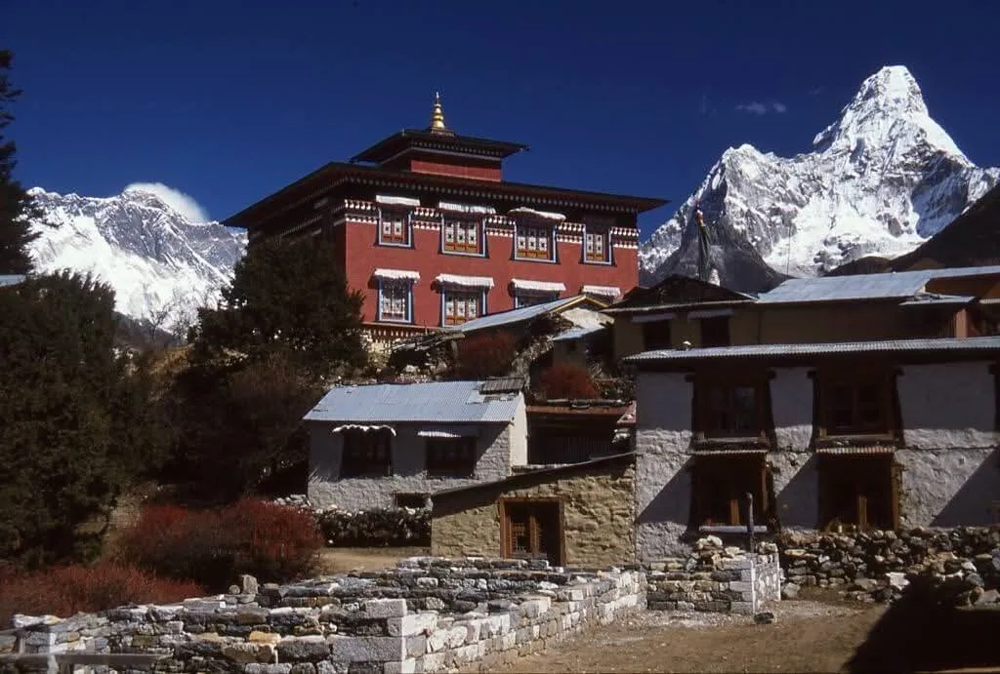
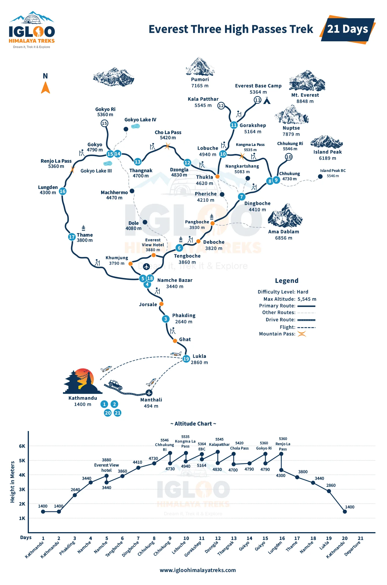
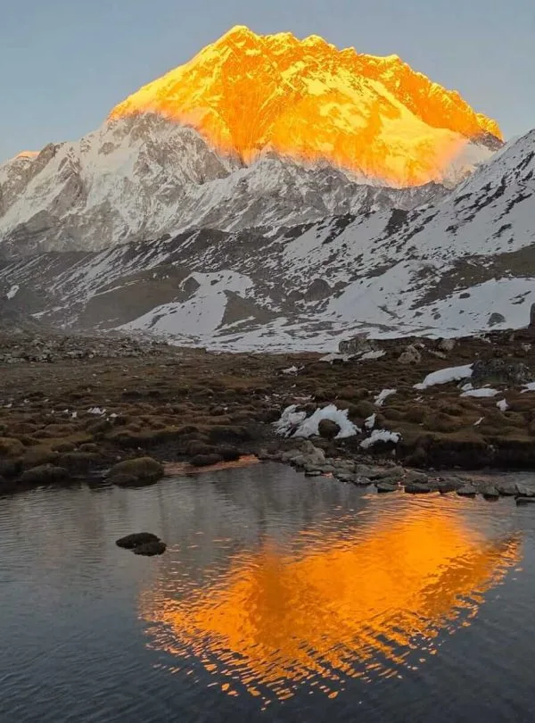

Crossing Kongma La, Cho La, and Renjo La in 21 days was the greatest mountain adventure of my life. The views from Renjo La overlooking Gokyo Lake and Everest in the morning light were utterly breathtaking. Igloo Himalaya Treks handled safety, pacing, and acclimatisation flawlessly.
Everest Region • Three High Passes Circuit
5.0
reviews on TripAdvisor
5.0
169 reviews on Google
Everest Three High Passes Trek — 21 Days
Cross Kongma La, Cho La and Renjo La on our 21-day circuit through Nepal’s Khumbu region. The route includes Everest Base Camp, the Gokyo Lakes and hikes towards Chhukung Ri, Kala Patthar and Gokyo Ri.

Travelers' Choice
Best of the Best 2026




Key Trip Facts
DURATION
21 Days
21 days, including Kathmandu sightseeing and 17 walking days with acclimatisation and viewpoint hikes
DIFFICULTY
Very Challenging
Very challenging; previous trekking experience and strong fitness recommended
MAXIMUM ALTITUDE
5,550 m / 18,209 ft
Approximately 5,550 m at the Chhukung Ri viewpoint
DESTINATION
Nepal
Khumbu Himalayan Region
ACTIVITY
Trekking
High-altitude circuit over three glaciated mountain passes
ACCOMMODATION
20 Nights Total
3 nights in a 3-star Kathmandu hotel and 17 nights in mountain teahouses
TRANSPORT
Domestic Flights & Transfers
Return Lukla flights and private airport transfers; Kathmandu–Manthali transfers when required
MEALS
Full Mountain Board
Breakfast in Kathmandu; breakfast, lunch and dinner during the trek; seasonal fruit and Snickers after dinner; drinks extra
RECOMMENDED SEASON
Spring & Autumn
Spring (March–May) and autumn (September–November), subject to pass conditions
TREK STARTS
Lukla
Tenzing-Hillary Airport (2,860 m)
TREK ENDS
Lukla
Tenzing-Hillary Airport (2,860 m)
TREK REGION
Everest / Khumbu
Sagarmatha National Park & High Alpine Valleys
PACKAGE START POINT
Kathmandu
Tribhuvan International Airport (KTM) pickup
PACKAGE END POINT
Kathmandu
Tribhuvan International Airport (KTM) drop-off
Everest Three High Passes Trek Overview
Our 21-day Everest Three High Passes Trek links the Imja, Khumbu, Gokyo and Thame valleys through Kongma La, Cho La and Renjo La. The circuit also visits Everest Base Camp at 5,364 m and the Gokyo Lakes. Chhukung Ri, Kala Patthar and Gokyo Ri provide separate viewpoint hikes, with mountain visibility dependent on the weather.
After Kathmandu sightseeing and trek preparation, fly to Lukla and follow the Dudh Koshi valley through Phakding to Namche Bazaar. An acclimatisation day gives you time for a shorter hike before continuing to Tengboche and Dingboche. From there, the route follows the Imja Valley to Chhukung. A second night and a hike towards Chhukung Ri precede the climb to Kongma La, the highest pass at approximately 5,535 m.
Crossing Kongma La brings you to Lobuche and the route towards Everest Base Camp. After visiting base camp and hiking Kala Patthar, continue to Dzongla for Cho La. The next section crosses the Ngozumpa Glacier to Gokyo. Your final pass, Renjo La, leads into the Thame valley before returning through Namche Bazaar towards Lukla again.
This is a demanding circuit for trekkers with strong fitness and previous experience on mountain trails. Several days combine high altitude with steep rock, loose ground, snow or ice. Repeated nights above 4,500 m add to the effort. Acclimatisation hikes and shorter stages help manage the ascent, but illness and unsuitable pass conditions can still require changes to the route.
You stay in mountain teahouses and a Kathmandu hotel. The programme includes sightseeing, flights and seventeen walking days, with time for acclimatisation hikes and exploration around the lakes.
Everest Three High Passes Trek Highlights
Why Book the Everest Three High Passes Trek with Igloo Himalaya Treks?
We help you prepare in Kathmandu and support your circuit through the Khumbu. This package includes the following trekking arrangements.
Trek Briefing and Gear Check
Before leaving Kathmandu, we explain the programme, check your essential equipment and help with last-minute preparations. You can ask questions about the walking days, accommodation and what to carry.
Guide and Porter Support
Your English-speaking guide leads the route, with one porter for every two trekkers. The guide’s wages, insurance, meals, accommodation and trekking equipment are covered; you carry your daypack and daily essentials.
Equipment Provided for the Trek
We provide a sleeping bag, down jacket and duffel bag for your trekking gear. All three items are supplied for use during the trek and must be returned to us afterwards.
Communication When Plans Change
Weather can affect Lukla flights and conditions on the high passes. Our team explains possible changes and discusses the next steps with you, including any additional accommodation or transport costs when necessary.
Want to know more about the Everest Three High Passes Trek?
Chat directly with our lead Himalayan high-altitude coordinators on WhatsApp.
Replies within 4 hours
Day 1: Arrival in Kathmandu
Arrival & Welcome — Overnight in Kathmandu (1,400 m) — Hotel Check-in & Briefing
Welcome to Nepal. Our representative meets you at Tribhuvan International Airport and accompanies you to your hotel. After you settle in, we go through the trekking programme, check your essential equipment and discuss any questions you have.
Depending on your arrival time, you can explore the nearby streets of Thamel or rest after your flight. We also help with any final preparations before you leave for the Everest region.
Day 2: Kathmandu Valley Sightseeing and Trek Preparation
Kathmandu Valley Tour — Overnight in Kathmandu (1,400 m) — UNESCO Heritage & Gear Check
Today combines Kathmandu Valley sightseeing with trek preparations. Your visits focus on the city’s heritage sites, with the day’s route arranged around opening hours, available time and your departure preparations.
Possible visits include Swayambhunath, Boudhanath, Pashupatinath or Kathmandu Durbar Square. The final sightseeing route depends on timing and access. Later, return to the hotel for a gear check and briefing. Organise your trekking bags, keep your travel documents and personal medicines accessible, and prepare for tomorrow’s scheduled flight to Lukla and first walk to Phakding.
Day 3: Fly to Lukla and Trek to Phakding
Lukla Mountain Flight — Overnight in Phakding (2,610 m) — 3–4 hrs Walk along Dudh Koshi
Your mountain journey begins with a flight to Lukla at 2,860 m. Depending on airline operations and the season, the flight may depart from Kathmandu or Manthali Airport in Ramechhap.
After landing, you meet your trekking team and begin walking towards Phakding. The trail passes village homes, prayer wheels and forested slopes, with downhill stretches and shorter climbs along the way. Sections follow the Dudh Koshi River, introducing you to the valley you will explore over the coming days. We spend the night in Phakding.
Day 4: Trek from Phakding to Namche Bazaar
Sagarmatha Entry — Overnight in Namche Bazaar (3,440 m) — 5–6 hrs Walk & Hillary Suspension Bridge
We follow the Dudh Koshi through villages and pine forests, passing Benkar and Monjo before entering Sagarmatha National Park. Your guide handles the permit checks along the route.
Suspension bridges connect the valley trails, followed by a sustained uphill walk towards Namche. This final climb is the most demanding part of the day, so we allow time for breaks. Namche’s shops, lodges and houses spread across the hillside, making it an important trading town and a useful place to spend the next two nights.
Day 5: Acclimatisation Day in Namche Bazaar
Acclimatisation Day — Overnight in Namche Bazaar (3,440 m) — 3–4 hrs Hike to Hotel Everest View (3,880 m)
We stay another night in Namche and take a shorter hike above the town. A usual option is the trail towards Hotel Everest View, where clear weather offers views of Everest and nearby peaks.
Your guide chooses the walk according to conditions and how the group is feeling. Afterwards, we return to Namche for the night. The afternoon gives you time to rest, visit the shops or stop at a café before continuing towards Tengboche tomorrow.
Day 6: Trek from Namche Bazaar to Tengboche
Sacred Monastery Trail — Overnight in Tengboche (3,860 m) — 5–6 hrs Walk beneath Ama Dablam
Leaving Namche, we follow the hillside trail before descending towards Phunki Tenga. Mountain views accompany sections of the walk, while the river marks the low point before the climb to Tengboche.
The uphill trail passes through pine and rhododendron forest. Once we reach the village, you can settle into the teahouse and explore the surroundings. Tengboche’s Buddhist monastery stands against the mountain backdrop of Ama Dablam. If it is open to visitors, your guide explains the visiting customs before you enter.
Day 7: Trek from Tengboche to Dingboche
Imja Valley Ascent — Overnight in Dingboche (4,410 m) — 5–6 hrs Alpine Valley Walk
We descend through forest towards Debuche, cross the Imja Khola and continue through Pangboche. As the route gains height, the trees become fewer and the valley opens into slopes with low vegetation and stone buildings.
The trail passes Somare before reaching Dingboche in the Imja Valley. Today brings a noticeable gain in sleeping altitude, so we keep a steady pace throughout the walk. After checking into your teahouse, the afternoon is available for rest before tomorrow’s walk towards Chhukung.
Day 8: Trek from Dingboche to Chhukung
Valley Head Approach — Overnight in Chhukung (4,730 m) — 3–4 hrs Walk on Moraine Paths
From Dingboche, follow the upper Imja Valley towards Chhukung. The route is shorter than recent stages, but you continue gaining height, crossing open ground with views towards Lhotse and Island Peak when the weather allows.
Stone-walled fields give way to open grazing land and rocky ground as we approach the village. After checking into your lodge, spend the afternoon resting and organising your equipment. Tomorrow’s Chhukung Ri hike returns here, giving you a second night before crossing Kongma La.
Day 9: Hike to Chhukung Ri and Return to Chhukung
Chhukung Ri Viewpoint — Overnight in Chhukung (4,730 m) — 5–6 hrs Hike to 5,550 m Peak
Spend a second day in Chhukung, taking a hike towards Chhukung Ri. The rocky climb leads towards a viewpoint at approximately 5,550 m, with the turnaround point based on conditions and how you are feeling.
The hike returns to Chhukung for another night at the same elevation. In clear weather, Lhotse, Ama Dablam and nearby peaks are visible above the valley. Keep the afternoon for rest and equipment preparation before tomorrow’s demanding Kongma La crossing.
Day 10: Cross Kongma La and Trek to Lobuche
First High Pass: Kongma La (5,535 m) — Overnight in Lobuche (4,940 m) — 8–10 hrs Demanding Moraine Traverse
Leave Chhukung early and climb towards Kongma La, the highest of the three passes at approximately 5,535 m. The route climbs across rocky ground and glacial moraine, with several steep sections that become harder under snow or ice.
After a short stop at the pass, descend carefully towards the Khumbu Glacier. The crossing involves uneven debris and a changing trail before the final approach to Lobuche. There are no teahouses on the crossing; carry lunch and sufficient water.
Day 11: Visit Everest Base Camp and Return to Gorak Shep
Everest Base Camp (5,364 m) — Overnight in Gorak Shep (5,180 m) — 7–8 hrs Walk on Khumbu Glacier
We start from Lobuche and follow the rocky trail towards Gorak Shep. After a break, we continue to Everest Base Camp, crossing uneven glacial ground along the Khumbu Glacier.
Reaching base camp brings you into the landscape used by Everest expedition teams. During the spring climbing season, tents and expedition activity may be visible. At other times, the glacier and surrounding mountains define the visit.
After spending time at base camp, we retrace the trail to Gorak Shep. Tonight’s stop puts us close to the starting point for tomorrow’s Kala Patthar hike.
Day 12: Hike Kala Patthar and Trek to Dzongla
Kala Patthar Sunrise (5,545 m) — Overnight in Dzongla (4,830 m) — 7–8 hrs Hike & Descent via Lobuche
We make an early start for Kala Patthar. The climb above Gorak Shep is steep in places, and the altitude makes it demanding. In clear weather, the viewpoint offers close views of Everest, Nuptse, Pumori and the surrounding Khumbu peaks.
After returning to Gorak Shep for breakfast, retrace the route towards Lobuche. We then leave the main Base Camp trail and follow the hillside towards Dzongla, below Cho La. The afternoon walk brings changing views of the valley before reaching your teahouse for tonight.
Day 13: Cross Cho La and Trek to Thangnak
Second High Pass: Cho La (5,420 m) — Overnight in Thangnak (4,700 m) — 7–8 hrs Glacier & Rock Scramble
Leaving Dzongla early, climb through the valley towards Cho La. The upper approach includes steep rock and a glacier section, where snow or ice can make footing difficult. Your guide assesses the current route and equipment before continuing.
At approximately 5,420 m, Cho La links the Everest Base Camp side with the Gokyo Valley. Descend over rocky ground towards Thangnak, taking care on steep sections and loose stones. Settle into the teahouse and rest before tomorrow’s glacier crossing.
Day 14: Trek from Thangnak to Gokyo Lakes
Ngozumpa Glacier Crossing — Overnight in Gokyo Lakes (4,790 m) — 4–5 hrs Moraine Walk to Third Lake
Today’s stage crosses the Ngozumpa Glacier towards Gokyo. Although the distance is limited, the route passes over uneven debris and moraine, where careful footing and attention to your guide remain important.
Glacier movement can change the walking line, so follow the current route rather than older tracks. Beyond the crossing, the trail leads towards the Gokyo Lakes and the village beside Dudh Pokhari. Settle into your teahouse and rest before tomorrow’s viewpoint hike, which returns to Gokyo for a second night.
Day 15: Hike to Gokyo Ri and Return to Gokyo
Gokyo Ri Summit (5,357 m) — Overnight in Gokyo (4,790 m) — 3–4 hrs Sunrise Hike & Lake Rest
Start early for the climb to Gokyo Ri, following a steep path above the village. The viewpoint reaches approximately 5,357 m, with the turnaround and timing guided by the weather and how you are feeling.
In clear conditions, the view includes Everest, Lhotse, Makalu and Cho Oyu, with the lakes and Ngozumpa Glacier below. Descend carefully to Gokyo and keep the remaining day for rest. Tomorrow’s route crosses Renjo La into the valley towards Lungdhen.
Day 16: Cross Renjo La and Trek to Lungdhen
Third High Pass: Renjo La (5,360 m) — Overnight in Lungdhen (4,300 m) — 7–8 hrs Crest Walk to Thame Valley
Leave Gokyo early and climb towards Renjo La, the final pass of the circuit. The trail gains height above the lake, reaching approximately 5,360 m before dropping into the Bhote Koshi valley towards Lungdhen and the Thame route.
The descent includes steep sections and stone steps that need care, especially when icy. After a short stop at the pass, continue down through the valley to Lungdhen. Settle into the lodge and rest after another full day at altitude.
Day 17: Trek from Lungdhen to Thame
Traditional Sherpa Valley — Overnight in Thame (3,800 m) — 4–5 hrs Descent to Historic Monastery
Continue down the valley from Lungdhen towards Thame, passing Marlung and hillside grazing areas. The lower elevation brings a change from the rocky pass crossings and colder upper villages.
The route follows part of the valley used for trade between the Khumbu and Tibet. Expect sections of descent mixed with smaller climbs as you approach Thame. Once at the lodge, there is time to rest. Any walk towards the monastery depends on your energy, available time and local access.
Day 18: Trek from Thame to Namche Bazaar
Bhote Koshi River Trail — Overnight in Namche Bazaar (3,440 m) — 4–5 hrs Return to Bustling Market Town
Leave Thame and follow the valley trail towards Namche Bazaar. The route passes through smaller villages and wooded slopes, with river crossings and changes of gradient along the way.
As we approach Namche, the paths reconnect with the main Khumbu trekking route. Return to the teahouse and enjoy a less demanding afternoon after the longer high-altitude stages. Shops and cafés provide options for personal purchases, while the evening gives you time to organise your belongings for tomorrow’s final walk.
Day 19: Trek from Namche Bazaar to Lukla
Final Trekking Stage — Overnight in Lukla (2,860 m) — 6–7 hrs Valley Descent & Celebration
Our final trekking day follows the route down from Namche through Jorsalle, Monjo and Phakding. You cross familiar suspension bridges and return through the forested sections of the Dudh Koshi valley.
The approach to Lukla includes uphill stretches, so there is still some effort ahead after the main descent. On arrival, we check into the teahouse for the last night in the mountains. The evening gives you time to organise your belongings and spend time with your guide and porter team.
Day 20: Fly from Lukla and Return to Kathmandu
Lukla Return Flight — Overnight in Kathmandu (1,400 m) — Morning Mountain Flight & Leisure
We prepare for the return flight from Lukla. Depending on the operating schedule, you may fly directly to Kathmandu or land at Manthali Airport and continue by road.
After reaching your hotel, spend the remaining time resting, shopping or exploring nearby areas. Lunch and dinner in Kathmandu are at your own expense. Your return may be delayed by poor visibility, mountain weather or changes to airline operations.
Day 21: Final Departure from Kathmandu
Homeward Journey — Kathmandu (1,400 m) — Airport Transfer & Departure
Your 21-day Everest Three High Passes Trek ends today. After breakfast, prepare for your onward journey. Depending on your departure time, there may be an opportunity for a final walk nearby before leaving the hotel.
Our representative accompanies you to Tribhuvan International Airport for your departure.
What’s Included in the Everest Three High Passes Trek
Airport transfers
Private airport pick-up and drop-off in Kathmandu.
Kathmandu hotel accommodation
Three nights in a three-star hotel on a twin-sharing basis, with breakfast included.
Domestic flights
Return flights between Kathmandu (or Manthali) and Lukla, including airport taxes.
Kathmandu–Manthali road transfers
Shared or private ground transport when flights operate through Manthali Airport.
Teahouse accommodation
Seventeen nights in mountain teahouses along the trekking route on a twin-sharing basis.
Meals
Three meals daily (breakfast, lunch and dinner) during the trek, with fresh seasonal fruit and Snickers served after dinner.
Guide and porter support
An experienced English-speaking trekking guide and one porter shared between every two trekkers.
Permits and fees
Sagarmatha National Park entry permit and Khumbu Pasang Lhamu Rural Municipality entry fee.
Trekking equipment
Sleeping bag, down jacket and duffel bag provided for use during the trip and returned afterwards.
Kathmandu sightseeing
Half-day guided tour of UNESCO World Heritage sites with a private vehicle and tour guide.
Safety and paperwork
Medical first-aid kit carried by the guide, completion certificate, trekking map, government taxes and company service charges.
What’s Not Included in the Everest Three High Passes Trek
International flights and Nepal visa
International airfare to and from Kathmandu and your Nepal tourist visa fee.
Travel and rescue insurance
Compulsory policy covering high-altitude trekking to 5,550 metres, helicopter evacuation and medical expenses.
Drinks
Tea, coffee, bottled or boiled water, soft drinks and alcoholic beverages during the trek.
Kathmandu meals
Lunches and dinners in Kathmandu, except when specifically arranged as part of the programme.
Teahouse extras
Hot showers, Wi-Fi access, electronic device charging and battery charging fees at lodges.
Tipping
Gratuities for your trekking guide, porters and drivers.
Personal gear
Trekking boots, technical clothing, personal traction aids or microspikes and other individual equipment.
Emergency costs
Additional accommodation, food or transport resulting from flight delays, weather conditions, trail closures or illness.
Personal expenses
Souvenirs, laundry, phone calls and other personal items not mentioned in the inclusions.
Everest Three High Passes Trek Dates & Availability
Group Departures
If you would like to trek with other travellers, ask us about upcoming group departures. We’ll confirm the available dates, spaces and price for your chosen departure.
Private Trek Dates
Prefer to travel with your own group? Send us your preferred arrival date and number of travellers. We’ll check the arrangements for a private trek.
Starting Prices
Send your travel dates and group size for a written quotation. We’ll confirm the applicable rate, included services and availability before you make your booking.
Hiking Gear
Footwear, technical trekking poles, daypack and high-pass traction aids
Clothing
High-altitude multi-layering system for three 5,300m+ passes and Kala Patthar
Sleeping Equipment
Sub-zero teahouse warmth and hygienic sleeping comfort
Toiletries & Hygiene
High UV solar protection, trail hygiene and comprehensive blister kit
Electronics
High-capacity power storage in freezing cold, pass illumination & photography
Documents & Personal Items
National park permits, helicopter medical insurance & high-altitude cash
Sherpa Porter Luggage Allowance & Daypack Advice
We provide an 80L waterproof duffel bag for your main luggage carried by our local porters (maximum luggage allowance: 10–12 kg per trekker, returned after your trek). Please carry your daypack (5–7 kg) containing your daily drinking water, fleece mid-layer, waterproof jacket, camera, prescription medication, passport, and valuables.
0/10 read
Click topics below to explore essential briefings
1. Trek Difficulty and Fitness
The circuit involves seventeen walking days, including high passes, viewpoint hikes and shorter valley stages. Expect steep climbs, long descents and uneven glacier terrain. Snow or ice can make crossings harder. Previous mountain trekking experience and strong endurance are recommended for the effort above 4,500 metres.
Build on hiking experience with longer walks over uneven ground. Practise sustained climbs and descents with a daypack on consecutive days before departure.
Begin preparing two to three months beforehand, allowing longer if needed. Combine hill walks, strength work and longer hikes on consecutive days. Practise in your boots and become comfortable managing a daypack, warm layers and changes in weather.
2. Altitude and Acclimatisation
Namche and Chhukung provide repeated overnight stops before the first pass. The Gokyo Ri day returns to Gokyo. These stages support adjustment, but altitude illness can still affect you.
Tell your guide promptly about headaches, nausea, dizziness or unusual fatigue. Do not continue to a higher sleeping altitude while experiencing symptoms of altitude illness. If symptoms worsen despite resting at the same elevation, descent is necessary. Completing every pass must remain secondary to your health.
3. Medical Conditions and Travel Insurance
If you have an existing medical condition, seek advice from a healthcare professional familiar with high-altitude travel before booking. Discuss your planned route and any medicines you take.
We strongly recommend comprehensive insurance covering the full route to approximately 5,550 metres, high-pass crossings and glacier travel. Check emergency helicopter evacuation, medical treatment, exclusions and excess charges with your insurer. Carry your policy details, emergency contact number and the insurer’s assistance procedure.
4. Accommodation and Room Facilities
You stay three nights in a three-star Kathmandu hotel and seventeen in mountain teahouses. Rooms are twin sharing. Expect shared bathrooms, with basic facilities at the higher stops along the circuit.
Facilities vary between lodges and villages. Private bathrooms are not guaranteed at the trekking lodges. Bedrooms can be cold, and services are limited around Gorak Shep, Dzongla and Thangnak. Bring warm layers and prepare for basic conditions.
5. Food and Dietary Requirements
Trekking meals include breakfast, lunch and dinner, plus seasonal fruit and Snickers after dinner. Tea, coffee and all other drinks cost extra.
Tell us about allergies or dietary requirements before booking so we can discuss what can be arranged along the route. Explain any strict requirements clearly, including concerns about shared cooking equipment.
6. Drinking Water
Carry reusable bottles and drink boiled or appropriately treated water. Water from a clear stream or an untreated tap may still contain germs.
Boiling is the most reliable way to kill germs. If boiling is unavailable, filtration followed by disinfection offers broader protection than many portable filters alone. Follow the instructions for your treatment equipment or tablets.
7. Guide and Porter Support
The package includes an experienced, English-speaking guide and one porter per two trekkers. Your guide’s salary, insurance, meals, accommodation and equipment are covered. Your porter carries the main luggage; you carry your daypack.
8. Showers, Charging and Communication
Hot showers, Wi-Fi and device charging cost extra, with availability varying between lodges. Mobile reception and internet connections can be unreliable, particularly higher on the route. Carry a power bank and let family know that you may be out of contact for periods of the trek.
9. Permits and Documents
We arrange the required trekking permits, including Sagarmatha National Park and local entry permissions. Carry your passport, insurance details and copies of important documents. We check current documentation requirements; your Nepal visa remains your own responsibility.
10. Flight Delays and Extra Time
Lukla flights can be delayed or cancelled because of weather. During peak periods, flights may use Manthali Airport in Ramechhap, requiring a road transfer.
The scheduled return flight is on Day 20, before departure on Day 21. Allow additional time around international travel; delays may involve extra costs.
Altitude Profile of the Everest Three High Passes Trek
After two nights in Kathmandu, sleeping elevations rise through Phakding, Namche, Tengboche and Dingboche to Chhukung. Kongma La leads towards Lobuche and Gorak Shep, your highest overnight stop. The circuit then continues through Dzongla, Thangnak and Gokyo before descending through Lungdhen and Thame towards Lukla.
Overnight Stops and Altitudes on the Everest Three High Passes Trek
Elevations are approximate and follow the overnight stops in our itinerary.
Highest Viewpoints and Passes on the Route
HIGH-POINT EXCURSION
Day 9 — Chhukung Ri
Around 5,550 m, followed by returning to Chhukung for the night.
HIGH-POINT EXCURSION
Passes: Kongma La, Cho La & Renjo La
Kongma La 5,535 m; Cho La 5,420 m; Renjo La 5,360 m; sleep lower after each.
HIGH-POINT EXCURSION
Days 11–12 — Everest Base Camp and Kala Patthar
Around 5,364 m and 5,545 m, returning lower.
HIGH-POINT EXCURSION
Day 15 — Gokyo Ri
Around 5,357 m, followed by a return to Gokyo for rest.
Repeated overnight stops in Namche, Chhukung and Gokyo allow day hikes followed by sleeping at the same elevation. Turnaround decisions depend on conditions and health.
Weather and Best Time for the Everest Three High Passes Trek
Spring, from March to May, and autumn, from September to November, generally offer the most practical conditions for the Everest Three High Passes Trek. Snow, ice and wind affect crossings during these seasons. Your guide assesses current route conditions before each planned pass crossing.
Seasonal Weather Conditions
March–May
Spring
Lower forests warm through spring, but March can retain winter snow on the passes. April and May offer longer daylight, while afternoon cloud and fresh snowfall remain possible higher up.
September–November
Autumn
Early September can retain monsoon rain. October often offers clearer conditions, while November brings colder nights, shorter daylight and possible snow or ice on the crossings.
December–February
Winter
Severe cold, short days and snow can make crossings unsuitable. Lodges and access may be limited, and completing all three passes should not be assumed.
June–August, sometimes extending into September
Monsoon
Rain makes lower paths slippery, while cloud and snowfall can affect the upper route. Glacier conditions and swollen streams add difficulty, and poor visibility can disrupt Lukla flights.
These are seasonal patterns; conditions can vary from year to year and during an individual trek.
How Weather Changes Along the Route
Phakding & Namche Foothills
Phakding and Namche can feel warm during sunny hours. Conditions become colder around Chhukung, Lobuche, Dzongla and Gokyo, especially before sunrise, after sunset and on exposed sections above the valleys.
High Passes & Glaciers
High passes and viewpoints are exposed to wind, and temperatures can fall below freezing even during the main seasons. Snow or ice changes footing on steep sections. Keep warm layers, waterproofs, gloves and suitable traction accessible on crossing days.
Which Season Should You Choose?
Spring and autumn offer practical starting points for this circuit. Discuss March snow, September rain and colder late-autumn crossings before choosing dates. Winter and monsoon can prevent pass crossings, so consider different dates if current conditions are unsuitable for trekking.
Everest Three Passes Trek FAQs
Passes & Circuit Route
Is this trek suitable if I have never trekked?
∨
This is best suited to trekkers with mountain walking experience and strong fitness. The circuit includes high-altitude days, steep crossings and glacier terrain. If you are new to trekking, discuss your preparation and experience before choosing this route.
What is the highest altitude on this itinerary?
∨
The Chhukung Ri viewpoint reaches approximately 5,550 metres. Kongma La, at around 5,535 metres, is the highest pass, followed by Cho La and Renjo La. Gorak Shep, at approximately 5,180 metres, is your highest overnight stop.
What else is included beyond the three passes?
∨
The circuit also visits Everest Base Camp and the Gokyo Lakes, with hikes towards Chhukung Ri, Kala Patthar and Gokyo Ri. Kathmandu sightseeing, Sherpa villages and monastery surroundings add cultural context between the higher mountain stages.
Do we sleep at Everest Base Camp?
∨
No. You visit Base Camp during the day and return to a teahouse in Gorak Shep for the night. The following morning includes the planned Kala Patthar hike before continuing towards Dzongla. Camping at Base Camp is not included.
Are acclimatisation days complete rest days?
∨
They include shorter or higher hikes, followed by returning to the same village to sleep. Namche, Chhukung and Gokyo each have repeated overnight stops. Your guide adjusts the walks according to conditions and your health.
Do I need to carry my main trekking bag?
∨
A porter carries your main trekking luggage, with one porter shared between two trekkers. You carry your daypack containing water, weather protection, medicines and other daily essentials. Keep your passport, money and valuables with you.
Do I need crampons and ropes for the three high passes?
∨
Equipment needs depend on snow, ice and the current crossing route. Discuss traction, crampons and any rope arrangements with us before departure. These are separate from the supplied sleeping bag, jacket and duffel; your guide assesses conditions.
Is insurance covering trekking to 5,500 metres sufficient?
∨
A 5,500-metre limit falls below the planned Chhukung Ri viewpoint at approximately 5,550 metres. Ask your insurer to confirm the full itinerary, including high-pass crossings, glacier travel, emergency helicopter evacuation and medical treatment, with relevant exclusions clearly explained.
Does being fit protect me from altitude sickness?
∨
No. Good fitness helps with the walking demands, but it does not prevent altitude illness. Fit and experienced trekkers can also become unwell. Follow the acclimatisation schedule and report symptoms promptly instead of assuming fitness will protect you.
What should I do if I feel unwell at altitude?
∨
Tell your guide promptly about headaches, nausea, dizziness or unusual fatigue. Do not ascend to a higher sleeping altitude while experiencing symptoms of altitude illness. If symptoms worsen despite rest at the same elevation, descent is necessary.
Can I book as a solo traveller?
∨
Yes. You can enquire about joining a group departure or arranging a private trek. Send us your preferred dates so we can check the available options and confirm the price that applies to your booking.
What happens if weather prevents a high pass crossing?
∨
Your guide assesses the crossing and may advise waiting, changing the route or turning back. Completing every pass depends on conditions and your health. Discuss how changes affect your itinerary, accommodation and transport, including any additional costs, before proceeding further.
Everest Three Passes Trek Reviews
Real experiences from trekkers who completed the ultimate 21-day circuit across Kongma La, Cho La, and Renjo La with Igloo Himalaya Treks.

14 October

26 April

19 November

30 October


MORE ADVENTURES
You Might Also Like
If you prefer fewer high passes, a shorter itinerary or more time around Gokyo, consider these routes through the region.
 14 Days
14 Days
Everest Base Camp Trek — 14 Days
Follow the trail through Namche, Tengboche and Dingboche to Everest Base Camp and Kala Patthar. This route has no scheduled high-pass crossings and includes acclimatisation days, offering a shorter itinerary focused on the Khumbu valley.
 12 Days
12 Days
Gokyo Lakes Trek — 12 Days
Walk through Namche, Dole and Machhermo to the Gokyo Lakes, with a Gokyo Ri hike for mountain views. This itinerary focuses on the lake valley without crossing the three major high passes.
 14 Days
14 Days
Gokyo Lake Renjo La Pass Trek — 14 Days
Combine the Gokyo Lakes and Gokyo Ri with the Renjo La crossing into the valley towards Lungdhen and Thame. This route includes a pass crossing while leaving Kongma La, Cho La and Everest Base Camp outside the itinerary.
 17 Days
17 Days
EBC Chola Pass Gokyo Trek — 17 Days
Link Everest Base Camp with the Gokyo Lakes through Cho La, adding Kala Patthar and Gokyo Ri viewpoints. This route suits trekkers considering a single high-pass combination rather than the circuit across Kongma La and Renjo La.
Enquire about your preferred package for current prices and availability.